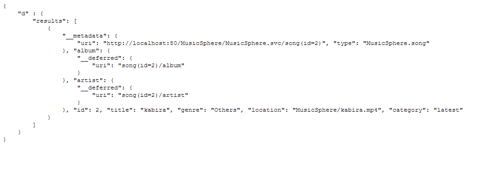

Music Sphere: Web Application using OData Endpoint
Authors:
Chintan Pathak
(Northeastern University, pathak.c@husky.neu.edu)
Hardik Shah
(Northeastern University, shah.h@husky.neu.edu)
Mukul Sharma
(Northeastern University, sharma.mu@husky.neu.edu)
Sagar Gopani
(Northeastern University, gopani.s@husky.neu.edu)
1. Abstract
This document encompasses the detail about a Web Application called MusicSphere that strictly follows open Data Protocol standard. The user interface allows the user to search, listen the songs and the endpoint processes the user input and returns the output in specified format. User can query the endpoint by forming the url as per the Odata conventions and post the data in a particular format. This document hereon comprises of the requirement, use cases, design and the few implementation details.
2. Introduction
The Open Data Protocol (OData) is a Web protocol, that provides a way to access large amount of data present in your applciation. It allows to perfrom simple CRUD operation on this data. The underlying technologies on which Odata is build are HTTP, Atom Publishing Protocol and JSON which helps in accessing large heap of data through variety of applcations, services. The talk of this document, MusicSphere is one of the examples. The application data is stored using MySQL schema compirising of users, songs, albums, etc. The data is exposed to the outside world using an API allowing the user to query features of the application, data and metadata. Odata WebService is created in order to access all the data within the application. The WebService exposes the metadata document created in Common Schema Definition Language (CSDL). This metadata document is referred as Entity Data Model and it consists of entities like user, songs, albums, favorites etc. User can query metadata as well as the specified entity and the application renders the Odata response into HTML pages.
3. Requirements
The primary requirement is to develop an OData endpoint.
>> An OData endpoint is to be established for querying the Database.
>> User input(s) are converted into Odata queries(URL).
>> Odata response is in either XML or JSON format.
>> Output is then parsed and rendered to HTML pages for user friendliness.
The main usecases are as follows :-
1. Request for Entity Data Model :
The data requested by the user is presented in the form of CSDL ( Common Schema Definition Language) which is an XML representation of the EDM.
Steps:
>> The user builds the URL to retrieve an entity on ODataService using HTTP URL queries.
>> The URL is written according to the OData standard.
>> The OData Endpoint constructs an Entity Data Model after receiving the users request.
>> The OData returns the entire metadata to user in the form of XML document.
2. Create an OData endpoint for MusicSphere :
Create an OData Endpoint API for MusicSphere via which user(s) can access the data through queries.
Steps:
>> Create a ODataWebService using mySql Database using PHP API.
>> Run ODataWebService process to start the endpoint at 'http://....'
3. Create a new user in MusicSphere :
Any client can create an account in MusicSphere application.
Steps:
>> The GUI gathers all the required information from the user and creates a new user using Odata endpoint.
>> The user request is formatted as per the OData standard.
>> The request is then forwarded to Odata endpoint.
>> As per users input, the OData endpoint generates query.
>> The MusicSphere API for creates the required entry in database.
>> The API sends response to OData endpoint.
>> The OData endpoint sends response back to the user after parsing the response.
Figure : Create User Sequence
4. Search for a song in MusicSphere :
Any user can search for a song in MusicSphere using Odata Endpoint
Steps:
>> The user asks for a specific song and API constructs the URL as per Odata standards.
>> The Odata endpoint receives the user request.
>> The request is forwaded further to API after retrieving the requested songs from database.
>> The API sends the generated results to OData endpoint.
>> The OData endpoint response is parsed and returned to user.
The sequence diagram is as follows-
Figure : Search Song Sequence
5. Access favourites list in MusicSphere :
Logged-In user can access their favourites tracks in MusicSphere.
Steps:
>> Logged-In User request for their favorites list and the API constructs the URL as per the OData standards.
>> The OData endpoint receives the user request.
>> The API selects the requested favorites list from database based on the request and sends it to Odata endpoint.
>> The OData endpoint sends parsed response to the user.
6. Access recently played list in MusicSphere :
Logged-In user can access its recently played list in MusicSphere.
Steps:
>> Logged-In User request for their recently played list and the API constructs the URL as per the OData standards.
>> The OData endpoint receives the user request.
>> The API selects the requested recently played songs from database based on the request and sends it to Odata endpoint.
>> The OData endpoint sends parsed response to the user.
4. Design
When we consider designing an OData endpoint, the main task is to design the mapping between the MySQL schema and OData Entity Data Model. This mapping is created manually in MusicSphere. The User cannot view the detailed database schema. In order to view the entities in the application, user can access it via $metadata. In addition, webpages will be available to browse through the different features of the MusicSphere. The detailed class diagram for the MySQL schema and the relation between entities is as follows-
Figure : MusicSphere EDM Class Diagram
5. Implementation
We have implemented this project as an OData endpoint and a web interface through which the user can interact with the data according to the requirements. The code base that we have used for implementation includes libraries of OData available in PHP and object oriented php to represent and interpret data in the front end. We developed the OData Producer via libraries that exposes the Music Sphere data (songs, users, albums, artists etc.). The consumer should query the producer with the required parameters and the producer generates the results based on the query and the output is generated in the form of XML or JSON, whichever form needed. The database was setup using MySQL and the endpoint is hosted as a service on a server where the queries were to be sent as a request to get the required data in response by the front end website which we made. The endpoint and the web site might not exist on the same server so the required URI for the endpoint has to be passed while querying from the web site.
6. Discussion
There are two components that have to be setup before using all the functionalities
of the web site and the OData Endpoint. The first is the OData Endpoint for which we have to host the service for it on a webserver,
may it be local to the same machine on which the web site is hosted or some other machine. The endpoint, once its up and running,
should then be able to respond to queries coming from the web site or directly via the service URI.
The request to the OData endpoint can be directly made through the service URI as shown below.
http://hostname:port/MusicSphere.svc/$metadata
The given query would return the metadata in XML format like it’s given below:
After the endpoint is up and running the web site is to be hosted on a web server, which again might be on the same machine or some different machine, and the users can access the web site via its name or IP address.
For retrieving an entity such as Songs, we can make a GET request like:
http://hostname:port/MusicSphere.svc/songs?$filter=name eq 'kabira'&$format=json
This will return the song entity having name 'kabira' in Json format which is shown as follow :

7. Conclusion
We have successfully implemented a Web Service Endpoint for our music streaming website "MusicSphere"
that follows Open Data standard. The endpoint allows the clients of the service to view the MusicSphere pages and stream music tracks on our site.
The endpoint can be queried for the data by forming various queries according to the standard by forming URLs and posting data.
Therefore we can conclude that we can create an OData standard compliant web service using which we can query and manipulate MusicSphere data.
This web service was found to be very helpful for querying large data and was easy to use.
In future we plan to try a single OData endpoint that can be used for more complex queries
and trying it out for more varied media types. We also plan to develop a more detailed schema with added entities so as to enhance user control on data.
Also, it will be interesting to try a single OData end point for multiple websites.
8. References
>> OData Introduction : (http://msdn.microsoft.com/en-us/data/hh237663.aspx)
>> OData Endpoint for PHP : (http://en.wikipedia.org/wiki/Open_Data_Protocol)
>> OData Endpoint for PHP : (http://blogs.msdn.com/b/phaniraj/archive/2009/09/08/using-the-php-toolkit-with-ado-net-data-services.aspx)
>> AtomPub protocol : (http://odataphp.codeplex.com/)
>> Report Reference : (http://kenb.ccs.neu.edu:7968/doc/PreliminaryReport.html)